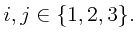
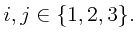
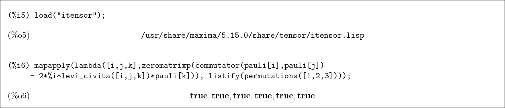
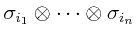
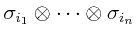
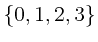
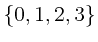
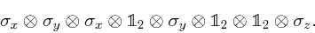
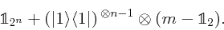

Subsections
5.1 Pauli matrices
pauli[ ]
creates the pauli matrices
]
creates the pauli matrices

![\begin{boxedminipage}{2.0\linewidth}
\begin{verbatim}(%i12) [ pauli[0], pauli[...
...&\linebreak[0]0\cr 0&\linebreak[0]-1\cr } \right] \end{dmath}\end{boxedminipage}](img87.png)
Show that the ket
 is an eigenvector of
is an eigenvector of  with eigenvalue
with eigenvalue  .
.
![\begin{boxedminipage}{2.0\linewidth}
\begin{verbatim}(%i8) is ( pauli[1] . ket...
...batim}
\begin{dmath}[number={\%o8}]
\mathbf{true}\end{dmath}\end{boxedminipage}](img90.png)
Here are we check that all our definitions of the pauli matrices and kets are
consistent in this sense.
![\begin{boxedminipage}{2.0\linewidth}
\begin{verbatim}(%i9) mapapply( lambda([i...
...]\mathbf{true},\linebreak[0]\mathbf{true} \right] \end{dmath}\end{boxedminipage}](img91.png)
Here we use anticommutator( ) to test the anticommutation relations among
the pauli matrices:
) to test the anticommutation relations among
the pauli matrices:
 for

for

![\begin{boxedminipage}{2.0\linewidth}
\index{genmatrix@{\bf genmatrix}}
\begin{ve...
...ix{1&\linebreak[0]0\cr
0&\linebreak[0]1\cr }\cr }\end{dmath}\end{boxedminipage}](img95.png)
The Maxima function
mat_unblocker ,
flattens the
blocks in the above expression, so we can write
,
flattens the
blocks in the above expression, so we can write
![\begin{boxedminipage}{2.0\linewidth}
\begin{verbatim}(%i4) identitymatrixp( ma...
...atim}
\begin{dmath}[number={\%o4}]
\mathbf{true}\end{dmath} \end{boxedminipage}](img96.png)
Now we load the
itensor package, which provides the levi-civita tensor, and make use of the
Maxima functions
permutations
(which returns
the set
of all permutations of a list)
and listify (which converts the set data type into the (ordered) list data type).
The qinf package provides
mapapply(
![$func,[list1, list2,\ldots]$](img97.png) ), which
apply s func to each of the lists and
returns a list of the results. (see the Maxima
documentation for
apply.) With all these, we can test
the commutation relations of the pauli
matrices. (In reality, the matrix definitions are not
complicated, we are actually testing the other functions.):
), which
apply s func to each of the lists and
returns a list of the results. (see the Maxima
documentation for
apply.) With all these, we can test
the commutation relations of the pauli
matrices. (In reality, the matrix definitions are not
complicated, we are actually testing the other functions.):
![$[\sigma_i,\sigma_j] = 2i\epsilon_{i,j,k}\sigma_k$](img98.png) .
.

pauli_product(
 ) returns the tensor product
, where the indices
) returns the tensor product
, where the indices
 are in . As elsewhere in this document,
are in . As elsewhere in this document,  is
the
is
the  identity matrix.
identity matrix.
The next three functions
pauliexp( ), invpauliexp(
), invpauliexp( ), and correlation_tensor(
), and correlation_tensor(
 )
are related. An example using them follows their definitions.
)
are related. An example using them follows their definitions.
pauliexp() returns the correlation tensor,
that is, the coefficients in the expansion of the matrix
in tensor products of pauli matrices. Explicitly, pauliexp
returns the coefficients
 in
in
|
(4) |
 |
must be a  matrix. The coefficients are returned as a list
of elements. The place of
in the returned list is determined
by taking
matrix. The coefficients are returned as a list
of elements. The place of
in the returned list is determined
by taking
 to be the binary representation of an integer. For convenience,
the coefficient can be retrieved by index with the function correlation_tensor.
to be the binary representation of an integer. For convenience,
the coefficient can be retrieved by index with the function correlation_tensor.
invpauliexp() is the inverse of pauiexp. Given a list representing
the correlation tensor (i.e. expansion coefficients),
invpauliexp returns the matrix given by (4).
correlation_tensor(
) returns the expansion coefficient for
the term
in the expansion of
, where is the list of coefficients in the expansion of as given,
for instance, by pauliexp.
Here is an example using the three functions defined above.
First we create three generic (complex) matrices.
![\begin{boxedminipage}{2.0\linewidth}
\begin{verbatim}(%i2) m1 : matrix([a1,b1]...
...2,d2]) $
(%i4) m3 : matrix([a3,b3],[c3,d3]) $
\end{verbatim}
\end{boxedminipage}](img112.png)
Here is the tensor product of the three matrices. This is not a generic element in
the three qubit Hilbert space represented by
 . For instance,
the three matrices have
. For instance,
the three matrices have  complex parameters while a generic matrix in
the tensor product space has
complex parameters while a generic matrix in
the tensor product space has  complex parameters.
complex parameters.
![\begin{boxedminipage}{2.0\linewidth}
\begin{verbatim}(%i5) mp : m1 otimes m2 o...
...break[0]\mathrm{d1}\*\mathrm{d2}\*\mathrm{d3}\cr }\end{dmath}\end{boxedminipage}](img116.png)
We compute the correlation tensor of mp

Check that the tensor has elements and see what a coefficient looks like.

Check that the inverse of the expansion gives the original matrix back
![\begin{boxedminipage}{2.0\linewidth}
\begin{verbatim}(%i9) is ( ratsimp( invpa...
...batim}
\begin{dmath}[number={\%o9}]
\mathbf{true}\end{dmath}\end{boxedminipage}](img119.png)
Here is the convenience function to return an element of the correlation tensor by index

spinor_rotation(
 ) returns the matrix that represents
the operator that rotates a spinor through an angle gamma about the axis specified by
phi (angle about the
) returns the matrix that represents
the operator that rotates a spinor through an angle gamma about the axis specified by
phi (angle about the  -axis) and theta (inclination from the -axis). The function spinor_rotation_trig(
)
returns the same matrix expressed only with cosines and sines. This is the standard
axis-angle parameterization. Explicitly the matrices are
-axis) and theta (inclination from the -axis). The function spinor_rotation_trig(
)
returns the same matrix expressed only with cosines and sines. This is the standard
axis-angle parameterization. Explicitly the matrices are

insert_operator(
![$nbits,[op1,i1,i2,..],[op2,j2,j2,...],...$](img124.png) ) returns
the operator
) returns
the operator
 , with some of the identity operators
, with some of the identity operators
 substituted by the operators op1,op2,... at the indices specified
by the indices
substituted by the operators op1,op2,... at the indices specified
by the indices
 . Each replacement operator replaces a single
qubit identity operator , even if the replacement operator has dimension
other than
. Each replacement operator replaces a single
qubit identity operator , even if the replacement operator has dimension
other than  .
For example
.
For example
insert_operator(8,[pauli[1],1,3],[pauli[2],2,5],[pauli[3],8])
returns

insert_operator is used to build the operators and gates listed below.
5.4 Gates
qinf defines both a variable and a function named hadamard.
The value of the variable hadamard is as follows,
![\begin{boxedminipage}{2.0\linewidth}
\begin{verbatim}(%i2) hadamard;
\end{verb...
...1}{\sqrt{2}}&\linebreak[0]-\frac{1}{\sqrt{2}}\cr }\end{dmath}\end{boxedminipage}](img130.png)
The function hadamard(
 ) returns the tensor product
of nbits one-qubit operators each of which is except
for the operators in positions i1,i2,... which are the hadamard
operator given by the variable hadamard. The function is defined
by
) returns the tensor product
of nbits one-qubit operators each of which is except
for the operators in positions i1,i2,... which are the hadamard
operator given by the variable hadamard. The function is defined
by hadamard(nbits,[t]) := insert_operator(nbits,cons(hadamard,t)),
which is an idiom that will work for similar user defined functions as well.
The dummy argument [t] causes all arguments after nbits to
be collected in a single list. The Maxima function
cons, invoked as cons( ),
returns the list given by prepending
),
returns the list given by prepending
expr to the list list.
A controlled gate applies an operator  to a single qubit (the target) in a register only if
each of a set of control qubits is set. Otherwise the operator is equivalent to
the identity operator. In any case, the operator is the identity on every
qubit other than the target.
The function controlled_gate(
to a single qubit (the target) in a register only if
each of a set of control qubits is set. Otherwise the operator is equivalent to
the identity operator. In any case, the operator is the identity on every
qubit other than the target.
The function controlled_gate(
 )
creates a controlled gate with one or more control qubits embedded in
a
)
creates a controlled gate with one or more control qubits embedded in
a nbits-qubit operator. The target qubit is at the index t,
while the control qubits are at the indices listed in the list clst.
In the returned operator, the operator is at the remaining positions.
The controlled gate operator applies qop at qubit t if all of
the control qubits are set (ie are  ) and is equivalent to the identity operator
otherwise.
For instance a cnot operator on
) and is equivalent to the identity operator
otherwise.
For instance a cnot operator on
 is given by
is given by
controlled_gate(2,pauli[1],2,[1]).
The controlled gate in an  -qubit space with
-qubit space with  control bits and
the -qubit target operator is implemented in qinf as
control bits and
the -qubit target operator is implemented in qinf as

In the case that this controlled gate operator is embedded in an operator in a larger space,
the same formula is used, with additional factors of inserted at the
appropriate places. Also the target qubit may occupy any index. This is implemented
via the insert_operator function described above.
cnot(
 ) returns a cnot gate on an
) returns a cnot gate on an nbits-qubit
register with the target at index t and control qubits at indices
c1,c2,.... The definition of this function is
cnot(nbits,t,[c]) := controlled_gate(nbits,pauli[1],t,c).
The functions cphase and crot are defined in the same way except
that operators pauli[3] and %i*pauli[2] respectively are
substituted for pauli[1]. For example, the elementary cnot gate
is given by cnot(2,2,1).
swap( ) returns the operator that swaps qubits
) returns the operator that swaps qubits t1
and t2 in an nbits-qubit register. It is defined by
swap(nbits,t1,t2) := cnot(nbits,t1,t2) . cnot(nbits,t2,t1) . cnot(nbits,t1,t2).
This function is provided for convenience. It is defined by
toffoli(nbits,t,c1,c2) := cnot(nbits,t,c1,c2). Note that there
are exactly two control qubits.
fredkin( ) is controlled swap operator. The qubits at indices
) is controlled swap operator. The qubits at indices
t1 and t2 are swapped if the control qubit at index c is set.
John Lapeyre
2008-09-02